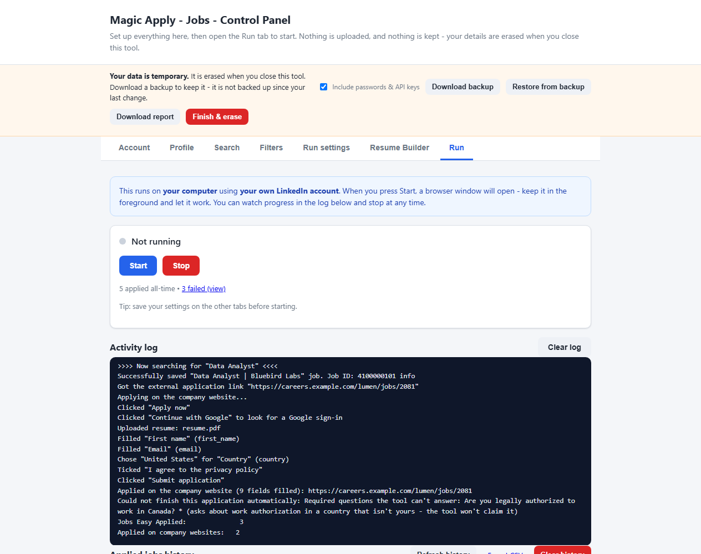
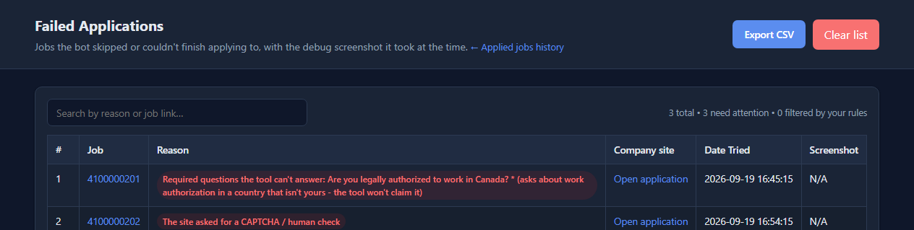

Auto apply on company career sites: how it works
Most jobs on LinkedIn are not Easy Apply. They send you to the employer's own application page, and that is where most tools stop. Here is what Magic Apply - Jobs does there, and where it hands over to you.
What happens on a company’s site
In the Search tab, Easy Apply only is off by default, so the tool also handles jobs that send you off LinkedIn. For each one it:
- Opens the company’s application page from the LinkedIn job.
- Signs in with Google if the site asks. It looks for a “Sign in”, “Sign up” or “Continue with Google” button on the page, in a pop-up or inside Google’s own frame, clicks it, and picks the account you set under Account → Google account for company sites.
- Uploads your resume first, so the site’s own resume autofill runs before anything is typed.
- Fills only what is still empty. A field the site already filled, or that you typed, is never replaced.
- Clicks Next, Continue and Submit page after page, and stops when the site confirms the application.

Three kinds of application page
| What the site is like | What the tool does |
|---|---|
| A single public form. No account needed. | Uploads your resume, fills the empty fields and submits, after your review if Pause before submitting is on. |
| Offers “Continue with Google”. | Clicks the Google button and picks your account. If Google asks for a password, 2-step verification or more than a sign-in, it waits for you. |
| Forces an email-and-password account, with no Google option. | Does not create accounts. It saves the job, with the company’s link and the reason, to the Failed jobs list so you can finish it by hand. |
Some applicant tracking systems commonly ask you to create an account for each employer, and those fall into the third row. We have not verified the tool against specific systems by name, so we do not claim support for any of them. See the FAQ.
The rules it follows
- It never submits with a required question empty, and it never invents an answer. A question it cannot answer from your profile goes to the AI if you turned that on. Otherwise it waits for you in the browser window (Wait for me on hard steps). If you do not answer in time, the job goes to the Failed jobs list, never submitted half empty.
- It never types a Google password and never gets past a CAPTCHA or 2-step verification. It waits while you finish that screen, then carries on. If Google asks for more than a sign-in, such as access to Drive or Gmail, it stops and lets you decide, and it never picks a Google account by guessing.
- It never sends template placeholders. Your name, email and phone must be set first, and values such as “First” or “123 Main Street” are never sent to an employer.
- It only says you are authorised to work in your own country. A question about another country is left for you, and it does not assume you will relocate.
- Marketing opt-ins stay unticked. Privacy and terms consent boxes are ticked.
- Number questions are answered by range. Three years goes in “3-5 years”, never in “10-13 years”.
When it hands over to you
Career sites are all different. Expect to be needed for CAPTCHAs, sites that force an email-and-password account, heavily custom dropdowns and file-upload-only steps. When the tool cannot finish, the job goes to the Failed jobs list with a plain reason, a link to the company’s page and a screenshot.

Honest limits
The tool works on ordinary forms, including forms inside iframes, styled radio buttons and multi-page flows. It has been tested against realistic local mock sites, not against every employer on the internet, so treat it as a beta, keep Pause before submitting on, and watch your first runs. If something goes wrong, Download report before you close the tool and attach it to an issue: it shows your recent log and why jobs failed, with your personal details masked.
Using any tool on LinkedIn also carries account risk. Read Is LinkedIn auto apply safe?, and see the Easy Apply limit guide for why company sites matter when Easy Apply runs out.
See it for yourself. Free, open source, and it keeps no data after you close it.
Download the toolFrequently asked questions
Will it work on any company website?
It handles ordinary application forms, including multi-page flows and forms inside iframes. Some sites will always need you: those that force an email-and-password account with no Google option, CAPTCHAs, and heavily custom questions. Anything it cannot finish is saved to a Failed jobs list with the reason and the company's link. So far it has been tested against realistic local mock sites, not every employer, so treat it as a beta and watch the first few runs.
Does it work with Workday, Greenhouse or Lever?
We have not verified it against specific applicant tracking systems, so we do not claim support for any of them. Forms that are a single public page are the easiest case. Some systems, such as Workday, commonly ask you to create an account for each employer; if a site has no Google sign-in option, the tool leaves the job for you and saves it, with the link, to the Failed jobs list.
Does it type my Google password or solve CAPTCHAs?
No. It never types a Google password and never gets past a CAPTCHA or 2-step verification. When Google or a site asks for one, the tool waits while you finish that screen in the browser window, then carries on.
Does it submit applications without me checking?
Only if you allow it. Pause before submitting is on by default, so the tool stops before each submission for you to review. Turn it off in Run settings for hands-free running. It never submits with a required question empty and never invents an answer.